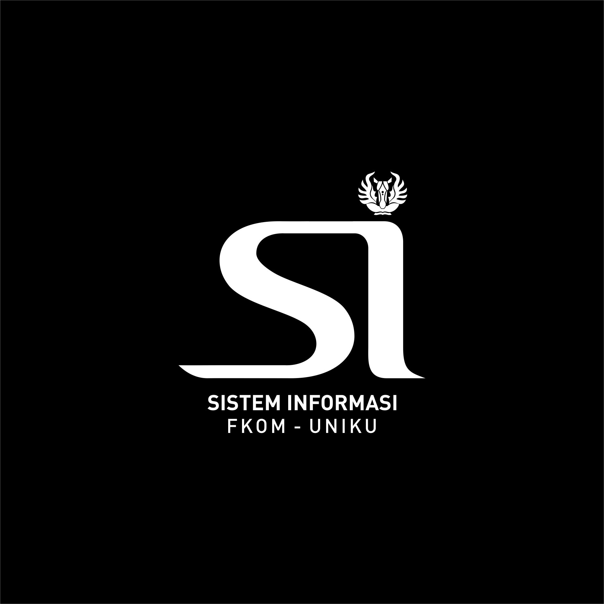
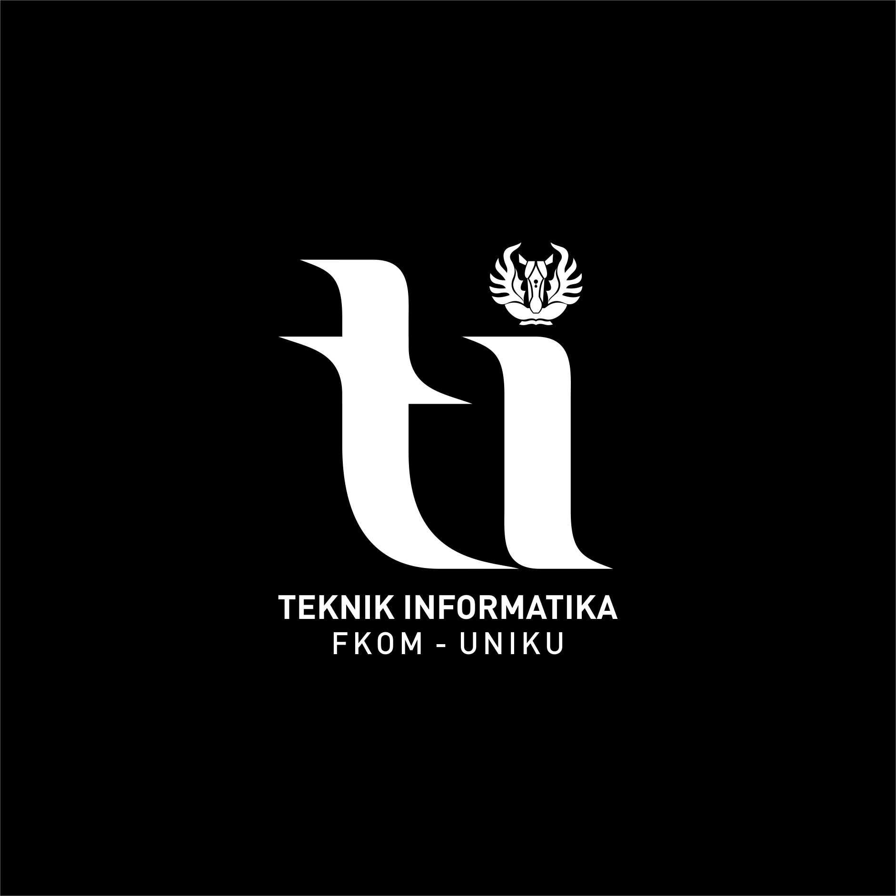
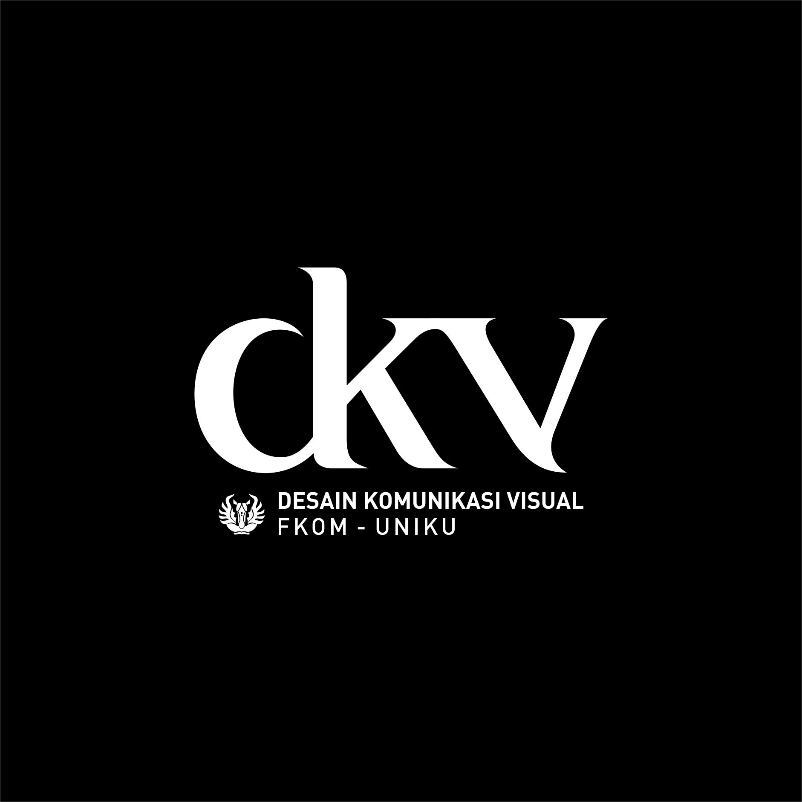
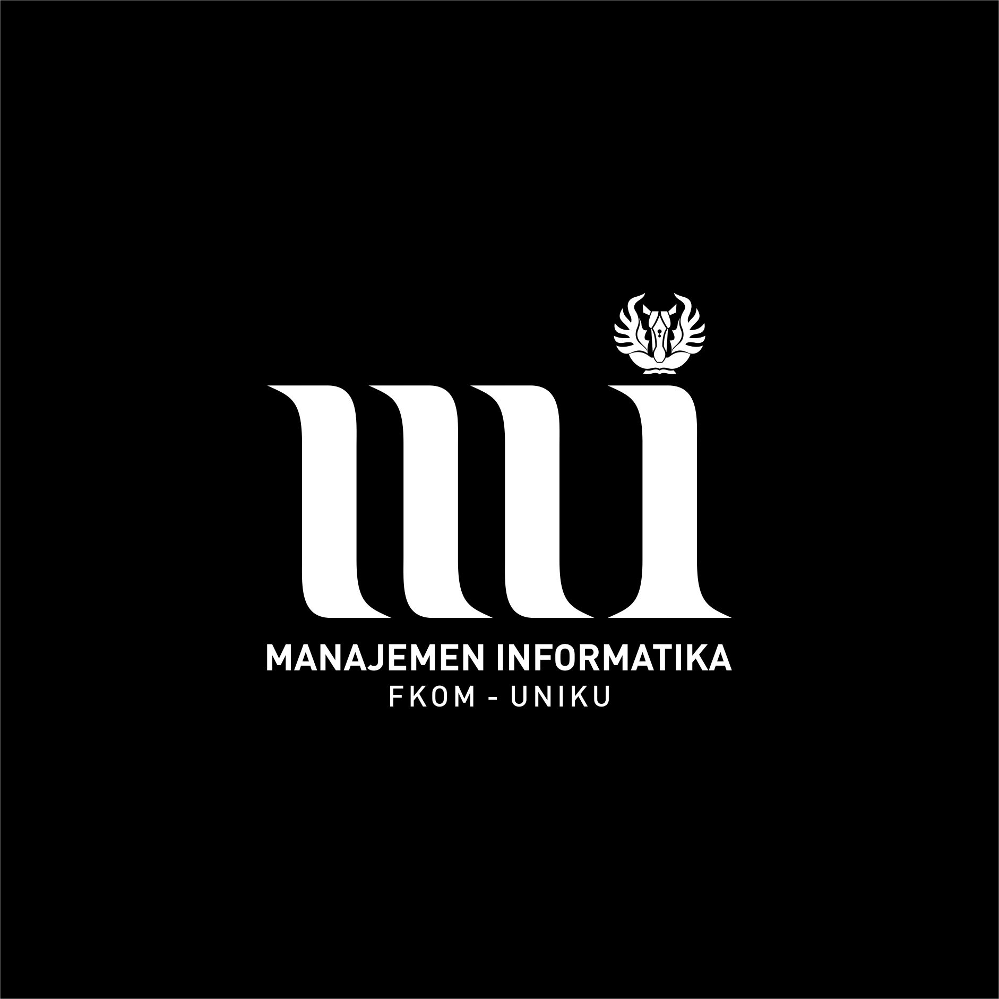

VISI
Terwujudnya program studi sistem informasi sebagai program studi
yanghandal dan unggul dalam penyelenggaraan Tri Darma Perguruan
Tinggi, unggul di bidangrekayasa sistem informasi di Wilayah Jawa
Barat pada tahun 2032.
PROFIL LULUSAN & PILIHAN KARIR
System Analyst, Data Analyst, Chief Information Officer (CIO),
SoftwareQuality Assurance
KEGIATAN MBKM
- Magang
- Studi Independen
- Bangkit Academy
- Pertukaran Mahasiswa Merdeka (PMM) Nusantara
- International Credit Transfer (ICT)
PROGRAM UNGGULAN
- Pertukaran Mahasiswa ke University Utara Malaysia (UUM)
- Praktisi/Dosen Kompetensi dari Universitas lain
PRESTASI MAHASISWA
- Juara 1 lomba Desain Cindramata 2018
- Juara Favorit lomba poster STIKKU 2017
- Mahasiswa Berprestasi UNIKU 2022
- Duta Putra Sosial Kuningan 2022
- Juara Lomba LLDIKTI Konsep Garapan Terbaik Tingkat Jabar-Banten2022
- PPK Ormawa
SERTIFIKASI

VISI
“Terwujudnya program studi yang handal dan unggul dibidang teknologi
informasi yang memiliki standar kompetensi dan menghasilkan
tenaga-tenaga ahli IT yang cerdas dan berbudi luhur di wilayah Jawa
Barat pada tahun 2032”
MISI
- Menyelenggarakan pendidikan bermutu tinggi dibidang Teknik Informatika bagi masyarakat sebagai sarana untuk menghasilkan lulusan yang bermoral, berkualitas, professional, kompeten, sesuai dengan kebutuhan standar industry, profesi dan perkembangan ilmu pengetahuan dan teknologi saat ini dan yang akan datang.
- Memenuhi kebutuhan masyarakat melalui pengenalan, pengalihan dan penyebaran ilmu pengetahuan dan teknologi yang relevan dengan ilmu teknik informatika untuk mencapai kualitas standar program studi dengan berfokus pada integritasi teknologi informasi dalam setiap aspek kehidupan manusia.
- Menemukan, mengembangkan dan menciptakan karya di bidang informatika serta menyebarkan ilmu pengetahuan dan teknologi demi kepekaan dan kepedulian terhadap kehidupan masyarakat.
- Menggalang penelitian untuk berperan aktif dalam peningkatan kemajuan ilmu pengetahuan dan teknologi, khususnya bidang informatika.
- Menumbuhkan budaya diskusi dlam pelaksanaan Tri Dharma perguruan Tinggi.
KOMPETENSI
- Kemampuan untuk merancang dan melakukan eksperimen, menganalisis dan menginterprestasikan suatu perangkat lunak berbasis database dan system informasi untuk menyelesaikan persoalan teknologi informasi melalui metodologi mutakhir diberbagai bidang seperti pendidikan, perbankan, telekomunikasi, manufaktur, atau industri lainnya.
- Mampu mengembangkan system sesuai dengan fokus pada bidang keahlian yang dilakukan secara mandiri maupun bersama-sama, smart application untuk keperluan industri (soft computing) dan mengembangkan aplikasi mobile beserta infrastruktur pendukungnya (mobile computing).
- Membangun atau merancang system yang mampu mengakses informasi secara cepat, tepat dan akurat di sector industry maupun tempat mereka bekerja di masa depan. Khususnya merancang bangun perangkat lunak berbasis mobile, anatarmuka perangkat keras dan komunikasi data.
- Kemampuan berkomunikasi yang efektif dalam bahasa inggris Lisan maupun Tulisan.
- Kemampuan dan kapasitas pengetahuan yang cukup sebagai ahli teknik profesional untuk menjalankan tanggungjawab social, budaya, lingkungan, global, dan bisnis, serta peduli terhadap prinsip dan kebutuhan pembangunan berkelanjutan.
- Kemampuan untuk memanfaatkan teknik, keahlian dan peralatan atau tools modern yang diperlukan untuk menyelesaikan tugas dan tanggungjawabnya.
- Mengimplementasikan rancangan system secara efisien dan efektif di dalam sebuah software yang dirancang untuk organisasi atau tatanan komunitas lainnya sehingga mendukung tercapainya visi dan misi organisasi yang bersangkutan.

VISI
“Menjadi program studi desain komunikasi visual yang unggul dalam
bidang industri multimedia, periklanan dan grafis yang berbasis
teknologi iformasi dan memiliki komitmen yang tinggi terhadap
pemberdayaan masyarakat tahun 2032”
MISI
- Mengembangkan dan mengimplementasikan pendidikan Desain Komunikasi Visual berbasis teknologi informasi di bidang industri multimedia, periklanan dan desain grafis, yang kreatif serta dapat terintegrasi secara keilmuan dengan disiplin ilmu lain.
- Mengembangkan penelitian dan pengabdian masyarakat, sebagai bagian dari pengembangan keilmuan yang mempunyai nilai kebaruan yang bermanfaat bagi kebutuhan industri dan masyarakat.
TUJUAN
- Menghasilkan lulusan (Sarjana Desain) yang kreatif dan berjiwa entreupreneur.
- Mengeksplorasi dan memecahkan permasalahan di bidang komunikasi visual dengan penekanan pada sisi inovasi dan integrasi keilmuan dengan menghasilkan karya penelitian dan produk inovasi.

VISI
“Mewujudkan program studi yang unggul dalam bidang teknologi informasi
dan komunikasi dan bermutu berbasis entrepeunership yang diseleraskan
dengan perkembangan teknologi informasi dan komunikasi serta memiliki
komitmen yang tinggi terhadap pemberdayaan masyarakat pada tahun 2032”
MISI
- Menyelenggarakan pendidikan, penelitian, dan pengabdian pada masyarakat khususnya dalam penerapan teknologi informasi.
- Memberi bekal pengetahuan teori dan praktek kepada peserta didik agar memiliki kompetensi yang tinggi dalam bidang pemrograman-pemrograman aplikasi untuk pemanfaatn sistem informasi.
- Menyelenggarakan riset-riset ilmiah dibidang teknologi informasi pada dunia pendidikan, industri, bisnis dan akuntansi yang senantiasa berkembang dengan sangat pesat.
- Menjadi sarana terjadinya pertemuan-pertemuan ilmiah baik lingkup lokal, nasional sehingga dapat memberikan kontribusi yang nyata dalam kemajuan teknologi informasi.
- Melayani, memandu, dan menyatu dengan masyarakat dalam upaya ikut serta mewujudkan masyarakat baru Indonesia yang berwawasan luas, dinamis, dan modern.
- Menjadi sarana penggodokan peserta didik sehingga menghasilkan tenaga-tenaga ahli yang mempunyai kompetensi yang tinggi dalam bidang pemrograman-pemrograman aplikasi untuk sistem informasi, kreatif, inovatif, mandiri, profesional, dan mampu bersaing dipasar global dengan para lulusan perguruan tinggi lain yang lebih terkemuka di indonesia, serta berakhlak mulia yang bermanfaat bagi dirinya, masyarakat,bangsa, dan negara.
TUJUAN
- Mampu bekerja sama, berkomunikasi, dan berinovatif dalam pekerjaannya.
- Mampu melakukan proses evaluasi diri terhadap kelompok kerja yang berada dibawah tanggung jawabnya, dan mengelola pengembangan kompetensi kerja secara mandiri.
- Mampu melakukan troubleshooting untuk menentukan kasus dan memperbaiki error serta memutuskan apa yang harus dilakukan.
- Menjaga dan mengelola jaringan komputer dan lingkungan komputasi terkait termasuk perangkat keras komputer, perangkat lunak sistem, perangkat lunak aplikasi, dan semua konfigurasi.
- Membantu Manajemen Teknologi Informasi dalam merancang dan membangun jaringan.